Deployment de pipelines na cloud
Agora que já vimos como criar um Flow e executá-lo, vamos dar o próximo passo e integrar nosso desenvolvimento ao repositório de pipelines!
O repositório de pipelines
O repositório de pipelines possui várias funcionalidades que vão auxiliar no desenvolvimento, integração, garantia de qualidade de código e deploy dos Flows.
Adicionando dependências
Para começar, precisamos seguir alguns breves passos.
1 - Crie uma pasta no seu computador no qual ficarão armazenados todos os repositórios da prefeitura
2 - Dentro dessa pasta vamos criar um ambiente virtual em python, mais conhecido como venv. Esse ambiente virtual serve para separarmos as bibliotecas e versões dessas que são exclusivas à esse projeto e evita que tenhamos problema de conflito entre elas. Para esse passo é necessário que você acesse essa pasta utilizando um terminal. Agora, basta escrever python3.9 -m venv <nome_da_sua_venv e aguardar a finalização do comando. O python irá criar uma pasta com o nome da sua venv. Toda vez que for rodar e testar suas pipelines, você deve ativar sua venv. Para ativá-la você deve entrar na mesma pasta em que você estava na criação da venv e pelo terminal digitar source <nome_da_sua_venv/bin/activate caso esteja em máquina linux ou mac. No windows, o comando é <nome_da_sua_venv/Scripts/activate. Repare que agora o ínicio da linha do seu terminal terá o nome da sua venv. É assim que você saberá que está com ela ativada. Para desativar, digite deactivate no terminal. Você pode ter quantas venvs quiser no seu computador. Para saber mais, acesse a documentação oficial.
3 - Se você ainda não realizou o git clone do repositório de pipelines da prefeitura, esse é o momento!
4 - Antes de começar a criar seu pipeline, verifique que você está na master e utilize o comando git checkout -b staging/<nome_branch> para criar uma nova branch a partir dela. É muito importante que o nome da sua branch inicie com "staging/" para que você consiga testar seu flow na cloud.
Neste tutorial focaremos em como rodar o prefect usando a cloud. Caso queira rodar local você deve seguir também os passos descritos no README do repositório de pipelines.
Estrutura de diretórios
Todos os diretórios seguem uma estrutura padrão, demonstrada e comentada abaixo:
orgao/ # diretório raiz para o órgão
├── projeto1/ # diretório de projeto
│ ├── __init__.py # vazio
│ ├── constants.py # valores constantes para o projeto
│ ├── flows.py # declaração dos flows
│ ├── schedules.py # declaração dos schedules
│ ├── tasks.py # declaração das tasks
│ └── utils.py # funções auxiliares para o projeto
...
├── __init__.py # importa todos os flows de todos os projetos
├── constants.py # valores constantes para o órgão
├── flows.py # declaração de flows genéricos do órgão
├── schedules.py # declaração de schedules genéricos do órgão
├── tasks.py # declaração de tasks genéricas do órgão
└── utils.py # funções auxiliares para o órgão
orgao2/
...
utils/
├── __init__.py
├── flow1/
│ ├── __init__.py
│ ├── flows.py
│ ├── tasks.py
│ └── utils.py
├── flows.py # declaração de flows genéricos
├── tasks.py # declaração de tasks genéricas
└── utils.py # funções auxiliares
constants.py # valores constantes para todos os órgãos
Constantes globais e locais 
Para facilitar a troca de certos parâmetros e o reaproveitamento de códigos, temos como boa prática um arquivo específico para salvarmos nossas variáveis. Aqui no ED vamos classificar nossos arquivos de constantes em dois tipos: globais e locais.
As constantes locais são todas aquelas que são específicas para um determinado flow (ou projeto). Elas ficam armazenadas em um arquivo constants.py no mesmo diretório do seu flows.py (ou do projeto no qual vocês está trabalhando). Em geral, criamos nesse arquivo uma classe constants que contém o DATASET_ID e TABLE_ID que serão utilizados para gravar os dados finais do flow no GCP, entre outras coisas que você julgar importante.
from enum import Enum
class constants(Enum): # pylint: disable=c0103
"""
Constant values for the geolocator project
"""
PATH_BASE_ENDERECOS = "/tmp/base_enderecos.csv"
DATASET_ID = "dados_mestres"
TABLE_ID = "enderecos_geolocalizados"
Já as constantes globais se referem as constantes que são comuns a todos os flows dentro do repositório de pipelines. Nesse arquivo você encontrará os valores de variáveis como os Agents, variáveis do docker, entre outras. Dificilmente você precisará alterar esse arquivo, e quando precisar fazê-lo tome muito cuidado. Uma mudança nele impacta todos os demais flows desse repositório.
Trabalhando com pipelines na Cloud
Agora que conhecemos o repositório de pipelines, vamos trabalhar com eles na Cloud. Isso envolve várias etapas, que serão detalhadas a seguir.
Como nomear Flows
Um dos primeiros passos no desenvolvimento de uma pipeline é a definição de seu nome. Para mantermos a organização e facilitar a busca das pipelines no prefect definimos algumas regras de nomeação;
O nome da pipeline deve seguir o modelo: <sigla_orgao_maiuscula>: <descricao_curta> - <descricao_longa>
- sigla_orgao_maiuscula: sigla do orgão em letras maiúsculas; EMD, SME, SMS, SEGOVI
- descricao_curta: Breve descrição da pipeline podendo ser um dataset_id, sistema, entre outros. Reservamos template para pipelines que podem ser reutilizadas e que normalmente ficam na pasta utils
- descricao_longa: Descrição mais completa do que a pipeline faz
Alguns exemplos: SEGOVI: 1746 - Ingerir tabelas de banco SQL, EMD: template - Ingerir tabela de banco SQL, EMD: template - Executa DBT model
Normalmente quando queremos reutilizar uma pipeline é necessário que o nome dela seja declarado em um arquivo constants.py que permite referenciar ela em outras partes do código. Podemos ver um exemplo dessa pratica nas pipelines que estão na pasta pipelines/utils e tem seus nomes definidos no arquivo constants.py.
Desenvolvendo um Flow para a Cloud
Nesse tutorial vamos mostrar apenas duas das formas de pipelines que podemos montar: criando seu próprio flow e utilizando flows pré-definidos
Criando um flow do zero
Agora podemos começar a desenvolver nosso primeiro Flow para a cloud. Para isso, vamos reaproveitar o código implementado no tutorial anterior.
Seguindo a estrutura de diretórios, podemos criar um novo diretório, chamado formacao, dentro da pasta pipelines. Dentro dele, vamos criar um arquivo __init__.py, para indicar que o diretório se trata de um submódulo do projeto. Então, nesse momento, a estrutura está assim:
formacao/
└── __init__.py
Então, vamos criar um novo diretório chamado exemplo, dentro do diretório formacao. Dentro dele, vamos criar um arquivo __init__.py, para indicar que o diretório se trata de um submódulo do projeto. Então, nesse momento, a estrutura está assim:
formacao/
├── __init__.py
└── exemplo/
└── __init__.py
Dentro do diretório exemplo, então, vamos criar nossas tasks e o Flow. Para isso, vamos criar um arquivo tasks.py, que conterá as tasks que serão utilizadas no Flow, e um arquivo flows.py, que conterá o Flow em si. Então, a estrutura está assim:
formacao/
├── __init__.py
└── exemplo/
├── __init__.py
├── flows.py
└── tasks.py
Se você se recorda bem, no tutorial anterior, havíamos criado um arquivo utils.py para conter nossa função de log. No entanto, no repositório de pipelines essa função já existe e pode ser importada de pipelines.utils.utils. Então, vamos escrever o arquivo tasks.py da seguinte forma:
# -*- coding: utf-8 -*-
"""
Tasks for the example flow
"""
from io import StringIO
import pandas as pd
from prefect import task
import requests
from pipelines.utils.utils import log
@task
def download_data(n_users: int) -> str:
"""
Baixa dados da API https://randomuser.me e retorna um texto em formato CSV.
Args:
n_users (int): número de usuários a serem baixados.
Returns:
str: texto em formato CSV.
"""
response = requests.get(
"https://randomuser.me/api/?results={}&format=csv".format(n_users)
)
log("Dados baixados com sucesso!")
return response.text
@task
def parse_data(data: str) -> pd.DataFrame:
"""
Transforma os dados em formato CSV em um DataFrame do Pandas, para facilitar sua manipulação.
Args:
data (str): texto em formato CSV.
Returns:
pd.DataFrame: DataFrame do Pandas.
"""
df = pd.read_csv(StringIO(data))
log("Dados convertidos em DataFrame com sucesso!")
return df
@task
def save_report(dataframe: pd.DataFrame) -> None:
"""
Salva o DataFrame em um arquivo CSV.
Args:
dataframe (pd.DataFrame): DataFrame do Pandas.
"""
dataframe.to_csv("report.csv", index=False)
log("Dados salvos em report.csv com sucesso!")
Obs: esse # -*- coding: utf-8 -*- no início do arquivo é para indicar que o arquivo está em UTF-8. Isso é necessário para que o Python consiga ler corretamente os caracteres especiais, como acentos, caso existam. Isso é uma forma de manter uma boa consistência em nossa base de código, dentre outras boas práticas que são adotadas para esse repositório.
Agora, vamos escrever o arquivo flows.py da seguinte forma:
# -*- coding: utf-8 -*-
"""
Example flow
"""
from prefect import Parameter
from prefect.run_configs import KubernetesRun
from prefect.storage import GCS
from pipelines.constants import constants
from pipelines.formacao.exemplo.tasks import download_data, parse_data, save_report
from pipelines.utils.decorators import Flow
with Flow("EMD: formacao - Exemplo de flow do Prefect") as formacao_exemplo_flow:
# Parâmetros
n_users = Parameter("n_users", default=10)
# Tasks
data = download_data(n_users)
dataframe = parse_data(data)
save_report(dataframe)
formacao_exemplo_flow.storage = GCS(constants.GCS_FLOWS_BUCKET.value)
formacao_exemplo_flow.run_config = KubernetesRun(
image=constants.DOCKER_IMAGE.value,
labels=[constants.RJ_COR_AGENT_LABEL.value],
)
formacao_exemplo_flow.schedule = None
Opa, opa, opa! Bastante coisa nova por aqui, não é mesmo? Vamos entender o que está acontecendo:
-
Estamos importando duas coisas novas aqui, o
KubernetesRune oGCS. OKubernetesRuné um run config que indica que o Flow deve ser executado em um cluster Kubernetes (que, em nosso caso, é onde os agents do Prefect estão hospedados. Caso não recorde o que são agents, retorne à Visão geral da infraestrutura). OGCSé um storage que indica que o Flow deve ser armazenado no Google Cloud Storage. Essas duas coisas são necessárias para que o Flow seja executado em nosso servidor do Prefect, na nuvem. -
Estamos importando, também, um tal de
constants. Esse é um objeto que contém diversos valores constantes que utilizamos de forma compartilhada em várias pipelines. Nesse caso, em especial, estamos importando para utilizar os valoresGCS_FLOWS_BUCKET, que é o nome do bucket do GCS onde os Flows são armazenados, oDOCKER_IMAGE, que é a imagem Docker que contém o ambiente de execução do Prefect (essa imagem é construída a partir do arquivoDockerfileque está no repositório de pipelines), e oRJ_COR_AGENT_LABEL, que é o nome do label que os agents do Prefect devem ter para que o Prefect consiga identificar onde a pipeline deve ser executada. -
Por fim, importamos também o
Flow, que já conhecíamos do tutorial anterior. Porém, esse é uma versão modificada por nós, do Escritório de Dados, que adiciona algumas funcionalidades que julgamos importantes. -
Após a definição do Flow, que foi idêntica à do tutorial anterior, temos que configurar os valores de storage, run config e schedule. Essas três coisas são necessárias para que o Prefect consiga executar o Flow em nosso servidor do Prefect, na nuvem. Por enquanto, estamos atribuindo o valor nulo para o schedule, o que significa que o Flow não será executado periodicamente. Para adicionar um schedule, teremos uma seção específica a seguir.
Agora que temos nosso flow definido, precisamos garantir que ele seja encontrado na hora de registrar os Flows no Prefect. Para isso, precisamos adicionar o seguinte no arquivo pipelines/formacao/__init__.py:
# -*- coding: utf-8 -*-
"""
Prefect flows for formacao
"""
from pipelines.formacao.exemplo.flows import *
E, depois, no arquivo pipelines/flows.py, precisamos adicionar, ao final, o seguinte:
from pipelines.formacao import *
E pronto! Está feito! Agora para registrar os Flows e executá-los, continue lendo.
Flows pré-definidos
Hoje possuímos diversos Flows pré-definidos, que são Flows que já estão prontos para serem executados. Esses Flows podem ser encontrados no diretório pipelines/utils e têm como objetivo introduzir templates de Flows para tarefas que se repetem com frequência. Alguns exemplos de Flows pré-definidos são:
dump_datario: Flow que extrai dados diretamente do data.rio e gera uma tabela no BigQuery.dump_db: Flow que extrai dados de um banco de dados SQL (no momento aceita Postgres, MySQL, SQL Server e Oracle) e gera uma tabela no BigQuery.dump_to_gcs: Flow que consome uma tabela do BigQuery, gerando um CSV compactado no GCS.dump_url: Flow que extrai dados de uma URL (pode ser um arquivo CSV, uma tabela no Google Sheets ou um arquivo no Google Drive) e gera uma tabela no BigQuery.execute_dbt_model: Flow que executa um modelo do DBT para materialização de dados no BigQuery.
Esses são somente alguns exemplos do que existe hoje lá e a tendência é que novos Flows sejam adicionados ao longo do tempo. Para saber mais sobre cada um deles e os parâmetros utilizados, entre em contato com o time do Escritório de Dados, será um prazer ajudar você!
Utilizando Flows pré-definidos
Uma prática muito importante quando estamos em um repositório colaborativo é a de reutilização de código. Sempre que possivel optamos por criar pipelines, tasks ou funções de forma modular para evitarmos a repetição do mesmo código em diferentes arquivos do repositório.
Para reutilizar uma pipeline pré definida precisamos importar a pipeline original e fazer o deepcopy e seguir o template padrão para nomeação, definição de agent e scheduler.
Obtendo dados de URL
No exemplo abaixo vamos reutilizar uma adaptação do Flow que extrai dados de uma URL (pode ser um arquivo CSV, uma tabela no Google Sheets ou um arquivo no Google Drive) e gera uma tabela no BigQuery.
Importante lembrar de adicionar o novo flow no
__init__.pyna raiz da pasta do orgão.
# -*- coding: utf-8 -*-
"""
Database dumping flows for formation project
"""
from copy import deepcopy
from prefect.run_configs import KubernetesRun
from prefect.storage import GCS
from pipelines.constants import constants
from pipelines.rj_escritorio.dump_url_formacao.schedules import gsheets_one_minute_update_schedule
from pipelines.utils.dump_url_formacao.flows import dump_url_flow
from pipelines.utils.utils import set_default_parameters
formacao_gsheets_flow = deepcopy(dump_url_flow)
formacao_gsheets_flow.name = "EMD: Formação GSheets - Ingerir tabelas de URL"
formacao_gsheets_flow.storage = GCS(constants.GCS_FLOWS_BUCKET.value)
formacao_gsheets_flow.run_config = KubernetesRun(
image=constants.DOCKER_IMAGE.value,
labels=[
constants.RJ_ESCRITORIO_DEV_AGENT_LABEL.value,
],
)
formacao_gsheets_flow_parameters = {
"dataset_id": "test_formacao",
"dump_mode": "overwrite",
"url": "https://docs.google.com/spreadsheets/d/1uF-Gt5AyZmxCQQEaebvWF4ddRHeVuL6ANuoaY_-uAXE\
/edit#gid=0",
"url_type": "google_sheet",
"gsheets_sheet_name": "sheet_1",
"table_id": "test_table",
}
formacao_gsheets_flow = set_default_parameters(
formacao_gsheets_flow, default_parameters=formacao_gsheets_flow_parameters
)
formacao_gsheets_flow.schedule = gsheets_one_minute_update_schedule
Abaixo temos um exemplo de scheduler para a pipeline mostrada anteriormente.
# -*- coding: utf-8 -*-
"""
Schedules for the database dump pipeline
"""
from datetime import datetime, timedelta
import pytz
from prefect.schedules import Schedule
from pipelines.constants import constants
from pipelines.utils.dump_url.utils import generate_dump_url_schedules
from pipelines.utils.utils import untuple_clocks as untuple
#####################################
#
# EGPWeb Schedules
#
#####################################
gsheets_urls = {
"test_table": {
"dump_mode": "overwrite",
"url": "https://docs.google.com/spreadsheets/d/1uF-Gt5AyZmxCQQEaebvWF4ddRHeVuL6ANuoaY_-uAXE\
/edit#gid=0",
"url_type": "google_sheet",
"gsheets_sheet_name": "sheet_1",
},
}
gsheets_clocks = generate_dump_url_schedules(
interval=timedelta(minutes=1),
start_date=datetime(2022, 10, 21, 15, 0, tzinfo=pytz.timezone("America/Sao_Paulo")),
labels=[
constants.RJ_ESCRITORIO_DEV_AGENT_LABEL.value,
],
dataset_id="test_dataset_formacao",
table_parameters=gsheets_urls,
)
gsheets_one_minute_update_schedule = Schedule(clocks=untuple(gsheets_clocks))
Obtendo dados de Base SQL
De maneira semelhante ao exemplo anterior, a pipeline abaixo também consulta dados de uma origem e gera uma tabela no BigQuery, com a diferença de que extrai dados de um banco de dados SQL (Postgres, MySQL, SQL Server ou Oracle).
Importante lembrar de adicionar o novo flow no
__init__.pyna raiz da pasta do orgão.
Abaixo temos o arquivo schedule.py, onde definimos os parâmetros específicos das tabelas SQL além do agendamento da pipeline.
# -*- coding: utf-8 -*-
"""
Schedules for the database dump pipeline
"""
from datetime import datetime, timedelta
import pytz
from prefect.schedules import Schedule
from pipelines.constants import constants
from pipelines.utils.dump_db.utils import generate_dump_db_schedules
from pipelines.utils.utils import untuple_clocks as untuple
#####################################
#
# Example Shedule
#
#####################################
example_queries = {
"chance": {
"dump_mode": "overwrite",
"execute_query": "SELECT * FROM EGPWEB_PRD.dbo.VW_CHANCE;",
},
"comentario": {
"dump_mode": "overwrite",
"execute_query": "SELECT * FROM EGPWEB_PRD.dbo.VW_Comentario;",
},
}
example_clocks = generate_dump_db_schedules(
interval=timedelta(days=7),
start_date=datetime(2022, 11, 4, 16, 0, tzinfo=pytz.timezone("America/Sao_Paulo")),
labels=[
constants.RJ_SMFP_AGENT_LABEL.value,
],
db_database="EGPWEB_PRD",
db_host="10.2.221.101",
db_port="1433",
db_type="sql_server",
dataset_id="planejamento_gestao_acordo_resultados",
vault_secret_path="egpweb-prod",
table_parameters=example_queries,
)
example_update_schedule = Schedule(clocks=untuple(example_clocks))
A variável example_queries é um dicionário em que as chaves são os table_id das tabelas e como
valores tem-se outro dicionário com parâmetros específicos de cada tabela e seus respectivos valores.
Sobre os parâmetros utilizados:
dump_mode: indica a maneira em que os dados serão adicionados à tabela no BigQuery (overwriteé usado para sobrescrever os dados enquandoappendadiciona linhas no final da tabela). Nesse caso, utilizamosoverwrite.execute_query: é a query que será executada no banco de dados de origem.
No exemplo acima, utilizamos a função generate_dump_db_schedules, que é uma função facilitadora, localizada no repositório pipelines.utils.dump_db.utils. Essa função define o schedule de todas as tabelas incluídas em example_queries, de modo que uma rode logo após o término da outra.
Além dos parâmetros de data de início, intervalo entre execuções e o agente prefect que vai executar essa pipeline, essa função recebe db_database, db_host, db_port, db_type, dataset_id e vault_secret_path, que são parâmetros comuns de todas as tabelas dentro de example_queries (para que não seja necessário adicionar esses parâmetros várias vezes, uma para cada tabela, dentro de example_queries, podemos adicioná-los uma vez só, dentro de generate_dump_db_schedules).
Os parâmetros db_database, db_host, db_port e db_type auxiliam no acesso às tabelas na base de dados SQL original e variam conforme a base utilizada. O vault_secret_path é o caminho no Vault (compartimento de credenciais utilizado pelo Escritório de Dados) em que as credenciais para acessar a base de dados da pipeline exemplo (no nosso caso, EGPWeb).
# -*- coding: utf-8 -*-
"""
Database example dumping flow for infra training
"""
from copy import deepcopy
from prefect.run_configs import KubernetesRun
from prefect.storage import GCS
from pipelines.constants import constants
from pipelines.rj_escritorio.dump_db_formacao.schedules import example_update_schedule
from pipelines.utils.dump_db_formacao.flows import dump_sql_flow
from pipelines.utils.utils import set_default_parameters
example_sql_flow = deepcopy(dump_sql_flow)
example_sql_flow.name = "EMD: Formação DataBase - Ingerir tabelas de banco SQL"
example_sql_flow.storage = GCS(constants.GCS_FLOWS_BUCKET.value)
example_sql_flow.run_config = KubernetesRun(
image=constants.DOCKER_IMAGE.value,
labels=[
constants.RJ_SMFP_AGENT_LABEL.value,
],
)
example_default_parameters = {
"db_database": "EGPWEB_PRD",
"db_host": "10.2.221.101",
"db_port": "1433",
"db_type": "sql_server",
"vault_secret_path": "egpweb-prod",
"dataset_id": "planejamento_gestao_acordo_resultados",
}
example_sql_flow = set_default_parameters(
example_sql_flow, default_parameters=example_default_parameters
)
example_sql_flow.schedule = example_update_schedule
Acima temos o arquivo flows.py dessa pipeline. O único elemento novo nesse arquivo é a função set_default_parameters, que guarda valores pré-definidos para determinados parâmetros, de forma que eles fiquem já preenchidos na UI do Prefect. Isso é particularmente útil no caso em que se deseje rodar uma pipeline diretamente da UI, sem ter que esperar pelo horário agendado. Nesse caso, todos os parâmetros (db_database, db_host, ...) teriam que ser preenchidos manualmente na UI, porém como já definimos valores padrões em example_default_parameters e set_default_parameters, esses já estarão preenchidos e o trabalho para executar essa pipeline é reduzido.
Agendamento de Flows 
O prefect nos permite automatizar os horários que nosso flow irá rodar. O agendamento (scheduler) dos pipelines é especificado em um arquivo scheduler.py dentro do diretório relativo a esse flow.
Os flows têm dois principais tipos de agendamentos possíveis:
-
CronClock, no qual você especifica os dias e horários que o pipeline irá rodar utilizando uma string Cron. -
IntervalClock, que faz com que o pipeline rode a cada x segundos.
No código abaixo, temos como exemplo um scheduler baseado no IntervalClock programado para rodar a cada 1 dia e com a data de início da automação para "2021-01-01 04:00:00" no timezone de São Paulo - BR. Assim que você subir esse código no github de staging ou master, o backend do prefect inicializará automaticamente esse flow todos os dias às 04:00 a partir de agora. Isso porque definimos o start_date para uma data do passado. Se quiser que o flow comece a rodar apenas a partir de uma data futura, basta indicá-la nesse campo.
Toda vez que vamos rodar um flow, precisamos especificar em qual Agent ele irá rodar para que possamos realizar as divisões de custo da infraestrutura. Nesse caso, estamos importando o agente do arquivo constants.py
Por último, podemos definir alguns parâmetros defaults que serão utilizados dentro do flow. Neste caso, mantivemos a materialização das tabelas no BQ com o parâmetro materialize_after_dump e definimos que essa materialização ocorra em ambiente dev utilizando o materialization_mode.
# -*- coding: utf-8 -*-
"""
Este é um exemplo de um arquivo schedules.py
"""
from datetime import timedelta
import pendulum
from prefect.schedules import Schedule
from prefect.schedules.clocks import IntervalClock
from pipelines.constants import constants
# define o objeto every_day_at_four_am ao instanciar a classe Schedule
every_day_at_four_am = Schedule(
clocks=[
IntervalClock(
interval=timedelta(days=1), # aqui definimos que o flow irá rodar a cada 1 dia
start_date=pendulum.datetime(2021, 1, 1, 4, 0, 0, tz="America/Sao_Paulo"), # define qual em data o scheduler começa a funcionar, geralmente setamos uma no passado
labels=[
constants.RJ_ESCRITORIO_DEV_AGENT_LABEL.value, # define qual agent o flow deve utilizar
],
parameter_defaults={
"materialize_after_dump": True, # é possível setar parâmetros do flow pelo scheduler
"materialization_mode": "dev",
},
)
]
)
Só criar o arquivo schedules.py não fará com que o backend do prefect inicialize a automação do flow. Precisamos indicar para esse determinado flow qual scheduler ele deve utilizar. Isso é feito dentro do arquivo flows.py .
# importa o objeto every_day_at_four_am do arquivo schedules que se encontra no caminho pipelines.rj_escritorio.geolocator
from pipelines.rj_escritorio.geolocator.schedules import every_day_at_four_am
with Flow(
"EMD: escritorio - Geolocalizacao de chamados 1746",
code_owners=[
"paty",
],
) as daily_geolocator_flow: # esse é o nome do nosso flow
do_something()
daily_geolocator_flow.schedule = every_day_at_four_am # atribui o scheduler do flow ao que foi definido no arquivo schedules.py
Para saber mais sobre esse tema acesse a documentação oficial do prefect em schedules e clocks.
Manutenção de qualidade de código
Para manter o código limpo, padronizado e compreensível para todos, utilizamos duas ferramentas: o pylint e o pre-commit.
O pylint é uma ferramenta de análise estática de código que nos ajuda a encontrar erros e padrões de código que podem ser melhorados. Ele é executado automaticamente quando você realiza um commit e, quando encontra algum erro, faz um comentário no seu PR indicando o que precisa ser corrigido. Um exemplo pode ser visto na imagem abaixo:
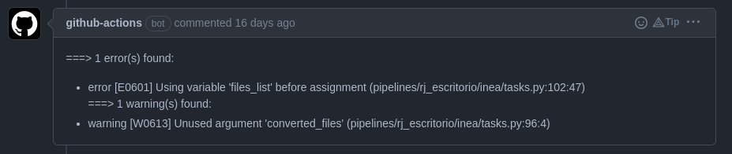
Nessa imagem, você pode notar que ele indica qual o erro encontrado e em qual linha do código ele ocorreu.
Você também pode executar o pylint localmente, para isso, basta executar o comando pylint pipelines/ na raiz do projeto. Ele irá analisar todo o código e indicar os erros encontrados. Um exemplo de saída do comando pode ser visto abaixo:
************* Module pipelines.formacao.exemplo.tasks
pipelines/formacao/exemplo/tasks.py:43:4: C0103: Variable name "df" doesn't conform to snake_case naming style (invalid-name)
--------------------------------------------------------------------
Your code has been rated at 10.00/10 (previous run: 10.00/10, -0.00)
Para saber mais sobre o pylint, acesse a documentação oficial.
O pre-commit é uma ferramenta que permite realizar algumas ações antes do commit ser realizado. Essas ações podem ser configuradas conforme nossa necessidade. Para esse repositório, as ações que selecionamos foram:
check-added-large-files: verifica se algum arquivo foi adicionado ao commit que ultrapasse o tamanho definido no arquivo.gitattributes(nesse caso, 10MB)detect-private-key: verifica se algum arquivo de chave privada foi adicionado ao commit (evita que chaves privadas sejam adicionadas ao repositório)fix-byte-order-marker: remove o byte order marker (BOM) de arquivos que possuam esse caracterefix-encoding-pragma: adiciona o pragma# -*- coding: utf-8 -*-nos arquivos que não o possuemno-commit-to-branch: impede que commits sejam realizados na branchmastertrailing-whitespace: remove espaços em branco no final das linhasblack: formata o código utilizando oblack(para saber mais sobre oblack, acesse a documentação oficial)flake8: verifica se o código está de acordo com oflake8(para saber mais sobre oflake8, acesse a documentação oficial)
Todas essas ações são realizadas automaticamente quando você realiza um commit (desde que corretamente configurado). De qualquer forma, caso um commit não atenda essas regras, o pre-commit irá fazer as correções que julgar adequadas diretamente no seu PR.
Para saber mais sobre o pre-commit, acesse a documentação oficial.
Por fim, mas não menos importante, temos também um utilitário customizado desenvolvido pelo Escritório de Dados que realiza a análise de árvore de dependências do código, alertando se as modificações que você introduziu no código podem afetar código de outras pessoas. Um exemplo pode ser visto na imagem abaixo:
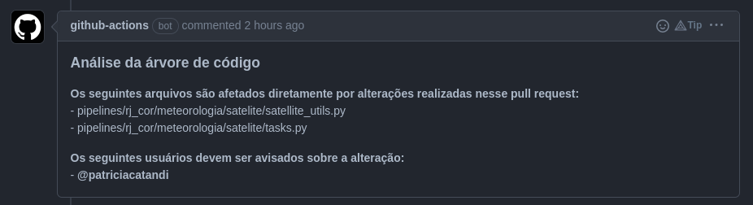
Como você pode ver, os usuários afetados por sua modificação são marcados diretamente no comentário.
Gerenciamento de segredos 

 NUNCA, JAMAIS E EM HIPÓTESE ALGUMA coloque senhas de acesso diretamente no seu código. Todo o gerenciamento de senhas é feito através do Vault. Para adicionar ou remover tokens, passwords, certificados, FTP e API keys peça ajuda ao @pipeliners nos canais do Discord do Escritório de Dados. O acesso ao Vault é restrito por conter muitas informações sensíveis.
NUNCA, JAMAIS E EM HIPÓTESE ALGUMA coloque senhas de acesso diretamente no seu código. Todo o gerenciamento de senhas é feito através do Vault. Para adicionar ou remover tokens, passwords, certificados, FTP e API keys peça ajuda ao @pipeliners nos canais do Discord do Escritório de Dados. O acesso ao Vault é restrito por conter muitas informações sensíveis.
Na imagem abaixo, temos um exemplo de como estão salvas as informações de acesso ao FTP da riomidia e como utilizamos esses dados no python. Nesse exemplo de código, utilizamos a função get_vault_secret para acessar as informações salvas com o nome de "riomidia". Note que as keys utilizadas dentro do dicionário têm os mesmos nomes definidos dentro do Vault.
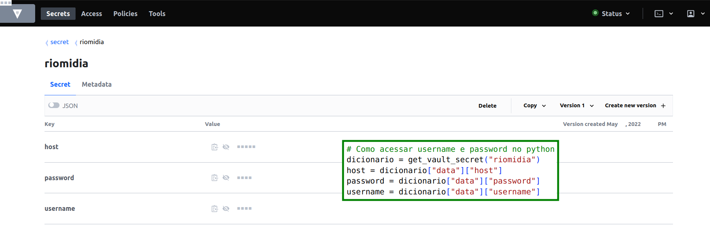
Como testar pipelines em staging 
O teste do flow será feito diretamente na cloud utilizando o ambiente de staging. Para isso, é necessário que você esteja em uma branch cujo nome inicia-se com "staging/".
Crie um Pull Request (PR) e toda vez que você fizer um push para sua branch remota, o CI/CD do Github irá reconhecer o nome da branch e começará o deployment do seu código para a área de staging.
Para verificar o andamento do deploy você tem duas opções:
- pode acompanhar pela página de PR através do círculo que aparece na frente do nome do seu PR. ✅ significa que o deploy foi finalizado com sucesso, o deploy teve algum problema e
 que o processo ainda não foi finalizado.
que o processo ainda não foi finalizado.
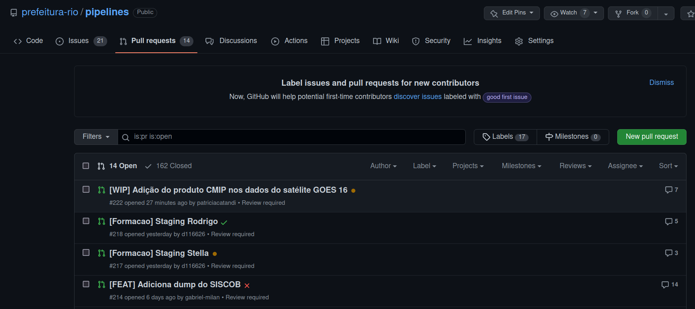
- ao entrar no PR é possível acompanhar o andamento de cada etapa e também do deploy. Aqui é possível verificar em qual etapa e qual foi o problema no deploy.
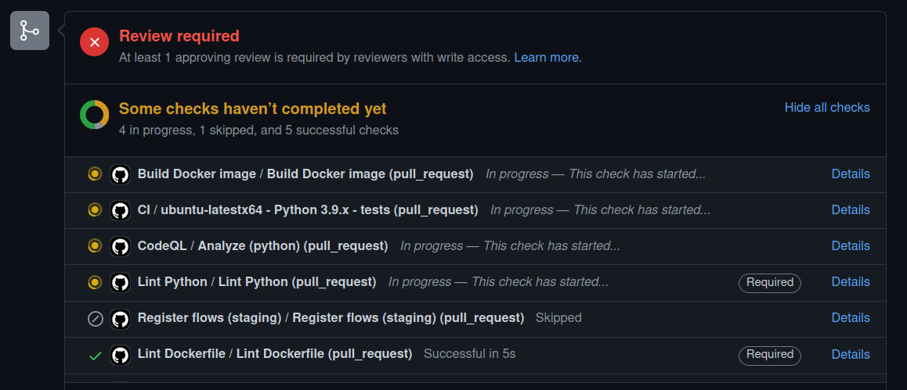
Quando a pipeline estiver finalizada e pronta para entrar na master, você precisa solicitar para alguém aprovar o seu PR. Com a aprovação, basta clicar no botão de merge e o CI/CD do Github começará o processo de deploy no ambiente de prod.
Usando a UI do Prefect
É na UI do Prefect que você conseguirá visualizar como está o andamento dos seus flows. Na imagem abaixo temos a tela de Dashboard do Prefect. Nessa primeira aba, temos uma visão geral de todos os pipelines. A caixa de "Run History" traz nas cores os status dos últimos flows rodados:
 sucesso
sucesso falha
falha agendados
agendados cancelados
cancelados
Esse esquema de cores sera o mesmo para qualquer página do Prefect.
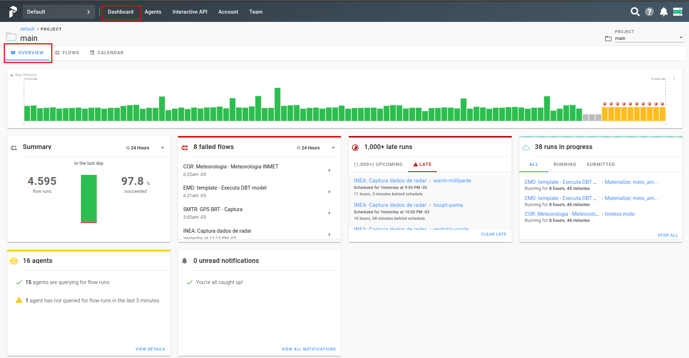
Buscando um Flow
A aba que mais nos interessa é a de Flows. Nela temos uma visualização rápida em formato de tabela das últimas runs de cada um dos pipelines. Na coluna de nome aparece o parâmetro "name" que você colocou quando instânciou o Flow no arquivo flows.py. Na coluna de Schedule você pode ligar ou desligar um flow. Se ele estiver desligado, ele não rodará automaticamente. A coluna Project indica se esse flow está em prod (main) ou em staging. Os Flows que estão na branch master do Github sempre aparecerão no projeto main, enquanto as branchs que iniciam com "staging/" aparecerão no projeto staging. Para definir quais tipos de projetos visualizar, basta selecionar na caixa superior à direita destacada na figura. A coluna Run History apresenta o status das últimas runs de cada Flow.
Para buscar um flow utilize o campo de pesquisa à direita.
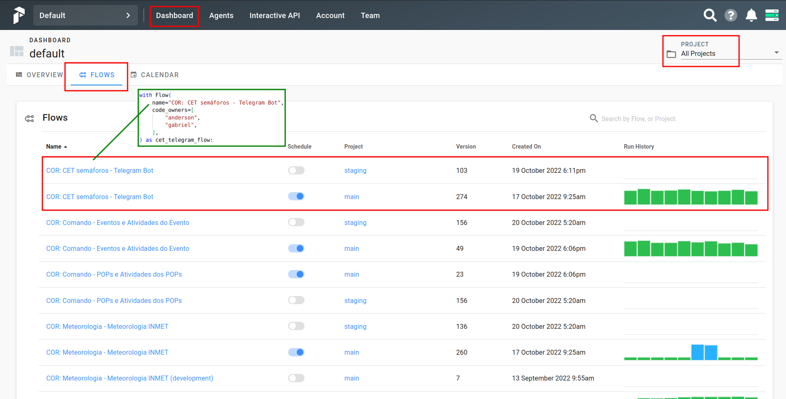
Como visualizar um Flow
Para entrar em um flow específico, basta clicar em seu nome. Agora, é possível ver com mais detalhes as últimas runs e as que estão agendadas.
Temos quatro ações importantes nessa tela:
-
Verificar qual versão do flow está rodando
-
Verificar se o Schedule está ligado
-
Executar o Flow
-
Alterar parâmetros internos do Flow
-
Acessar uma run específica: clique na barra referente à ela no "Run History" ou no nome dela em "Activity".
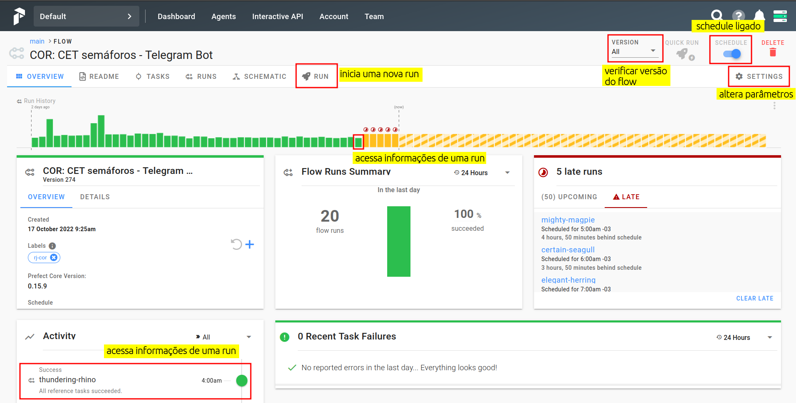
Como executar um Flow
Para iniciar uma nova run no Flow, aperte o botão Run na página do flow. Nessa nova tela é possível:
-
especificar um nome para a run,
-
preencher quais são os parâmetros específicos para essa run (no caso da imagem podemos especificar apenas o secret_path) e
-
preencher em Labels quais são os Agent responsáveis por essa run.
Esse último tópico é extremamente importante, pois se adicionar um Agent que não tem permissão de acesso às tabelas a run não irá rodar com sucesso.
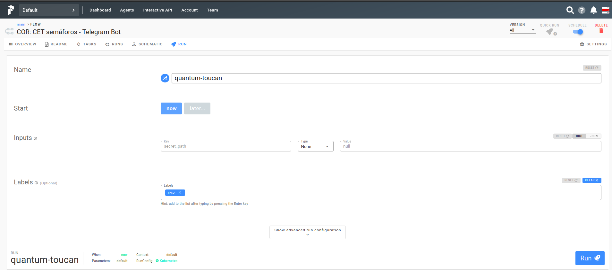
Como alterar parâmetros
Para alterar os parâmetros de todas as próximas runs, entre no botão  Settings da página do flow e depois entre na aba Parameters.
Settings da página do flow e depois entre na aba Parameters.
 Os parâmetros adicionados aqui funcionarão para as próximas runs que ainda não foram scheduladas. Para que esses parâmetros passem a valer a partir do momento em que você o altera, é necessário DESLIGAR e RELIGAR o scheduler.
Os parâmetros adicionados aqui funcionarão para as próximas runs que ainda não foram scheduladas. Para que esses parâmetros passem a valer a partir do momento em que você o altera, é necessário DESLIGAR e RELIGAR o scheduler.
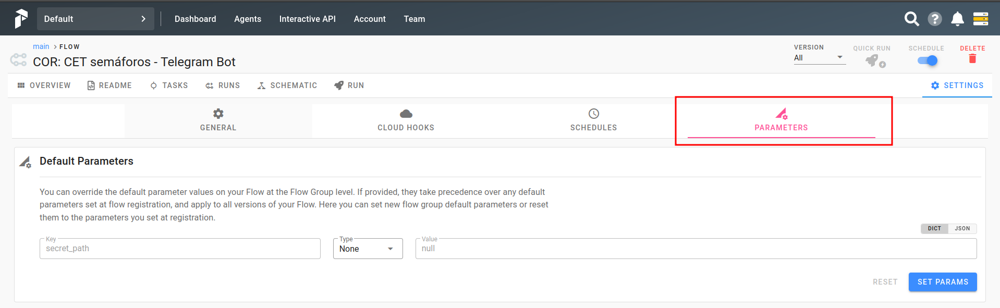
Como visualizar uma Run 
Agora você consegue visualizar o status de cada uma das tasks dessa run tanto em um gráfico do tipo Gant (em Timeline) quanto em formato de tabela com a data mais recente primeiro.

Na aba "Schematic" temos a representação em fluxo do pipeline e status de cada task.
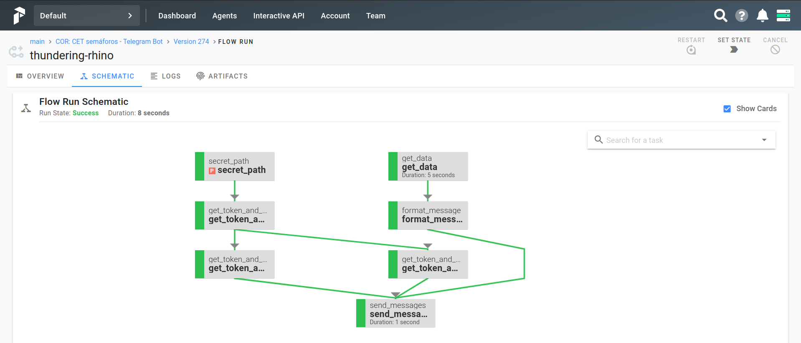
Na aba "Logs" você encontra mais informações sobre essa run específica, além de conseguir visualizar os logs que foram solicitados dentro do código. Essa aba de Logs será uma das mais utilizadas por você a partir de agora  .
.
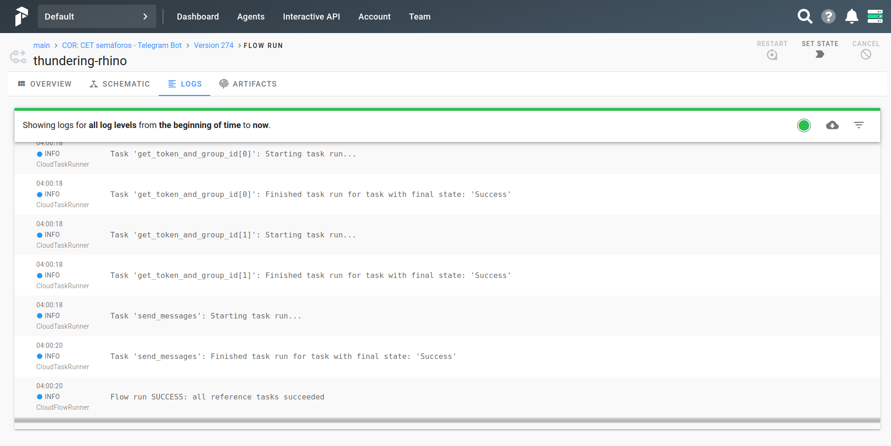